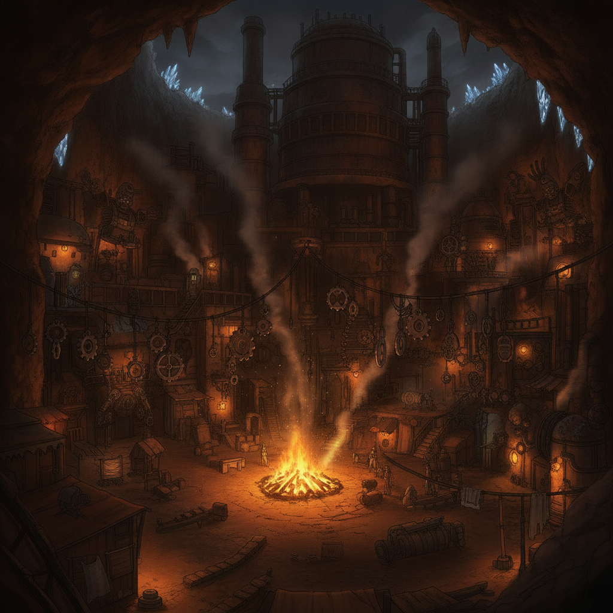
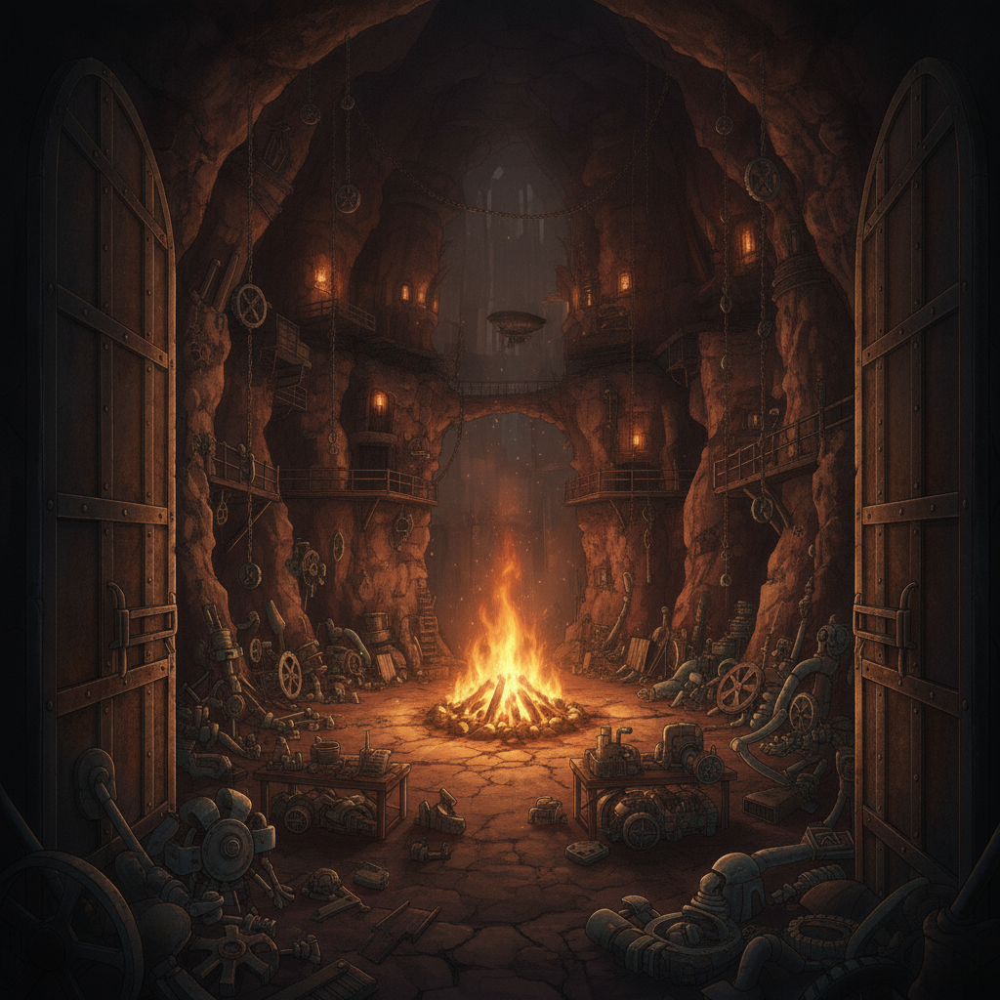
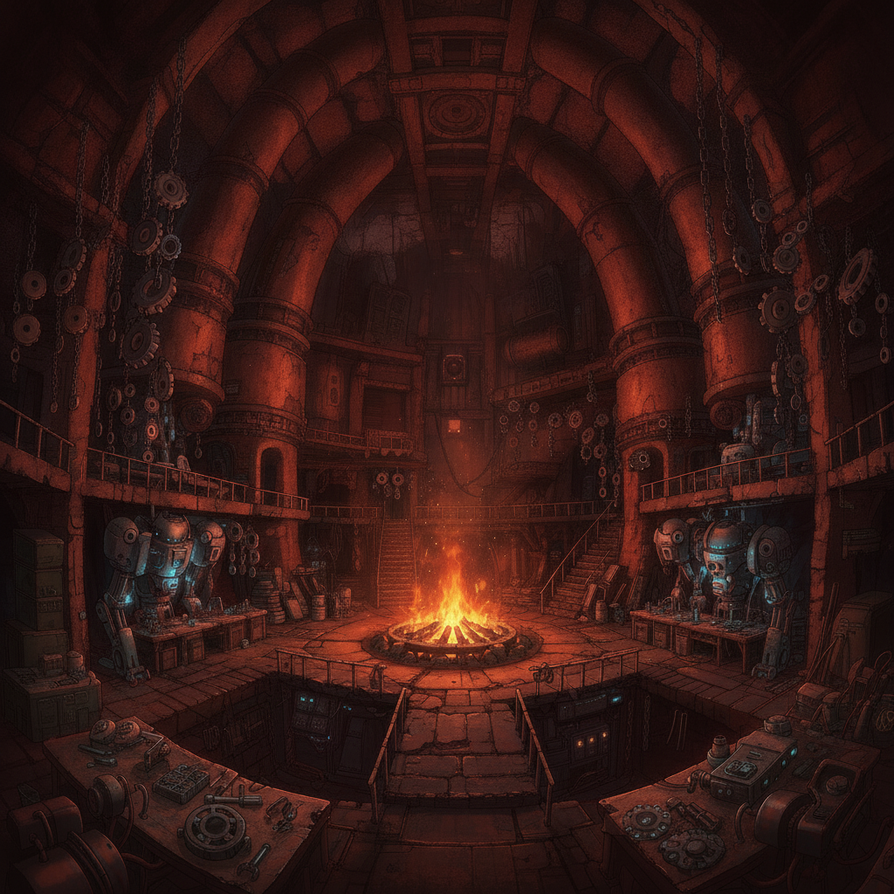

Deep beneath a dead furnace-works lies the Ashen Circle Haven, the beating heart of the underground. Here, the burned-out, the fugitive strong, and the Rust-touched shelter together, ungoverned and unbowed.
Filed-smooth cogs hang everywhere as tokens of defiance. This is Wren's true home.

With Wren's guidance, we build a coalition among the discarded. She opens doors in the smuggler-nets and among the dispossessed that no licensed official could ever access. Her value here is singular.
I expose corruption at the highest levels, feeding evidence into the networks Wren threads. Word from other stranded pairs reaches us, drawn by the promise of the Ashen Circle's defiance.

Our alliance grows, a mosaic of the world's forgotten and betrayed. Wren, usually so guarded, finds her voice here, leading with a quiet authority that inspires fierce loyalty.